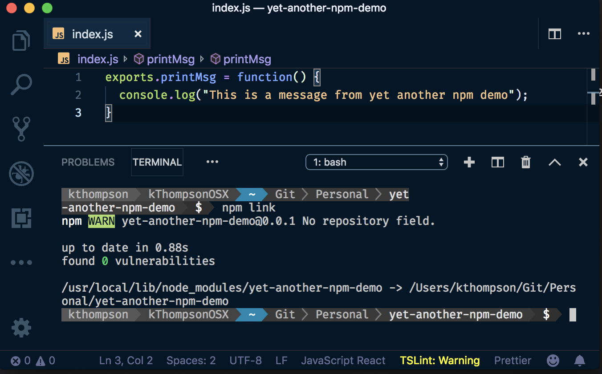
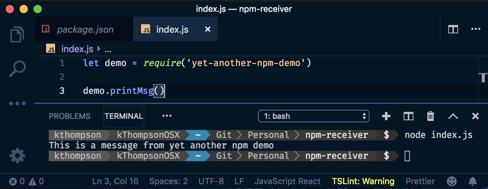
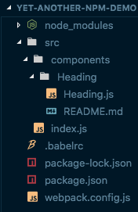
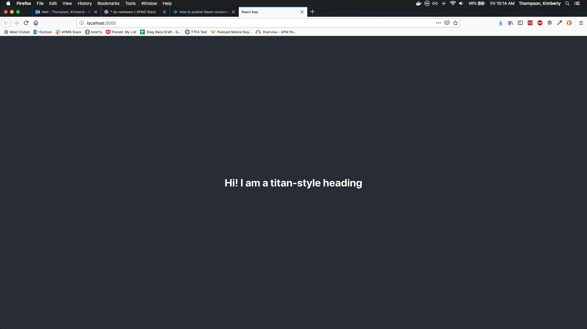

<!DOCTYPE html>
<html lang="en">
  <head>
    <meta charset="utf-8" />
    <meta name="viewport" content="width=device-width, initial-scale=1.0, maximum-scale=1.0, user-scalable=no" />

    <title>How to publish React components as an NPM package</title>
    <link rel="stylesheet" href="./css/reveal.css" />
    <link rel="stylesheet" href="./assets/night-owl.css" id="theme" />
    <link rel="stylesheet" href="./css/highlight/zenburn.css" />
    <link rel="stylesheet" href="./css/print/paper.css" type="text/css" media="print" />

  </head>
  <body>
    <div class="reveal">
      <div class="slides"><section  data-markdown><script type="text/template">

## Creating NPM Packages

</img>
</img>

How to turn your React Components into a library you can download and use via node package manager

<aside class="notes"><p>For today&#39;s tech talk, I decided to speak briefly about how I turned a number of React components we intend to use among multiple websites into NPM packages that we can import and use in any React project.</p>
</aside></script></section><section  data-markdown><script type="text/template">

<!-- .slide: data-background="./assets/saturn-background.png" -->
## Our Libraries

* [apm-titan](https://www.npmjs.com/package/apm-titan)
* [apm-mimas](https://www.npmjs.com/package/apm-mimas)
* apm-saturn (*to be released*)
* slideshow (*to be released?*)

<aside class="notes"><p>At the moment we have two libraries up and running in beta: <code>apm-titan</code> and <code>apm-mimas</code>. We intend to call our root site generator <strong>Saturn</strong>, so we decided to name any React component packages after the moons of Saturn. <strong>Titan</strong> is Saturn&#39;s largest moon, so naturally it&#39;s the name of our biggest package that contains most of the &quot;building blocks&quot; we&#39;ve been using to build our sites. <strong>Mimas</strong> is a much smaller library used to generate images from our Images API, so it&#39;s named after a much smaller moon.</p>
</aside></script></section><section  data-markdown><script type="text/template">

## In a nutshell

1. Create a simple local NPM module
2. Set up the build process with Babel and Webpack
3. Ensure that other React projects can use it with `npm link`
4. Publish to NPM

<aside class="notes"><p>There are likely many other processes that would work, and there may be some that work even better, but this is the one that worked for me. I&#39;ll walk you through the setup, and you&#39;re free to follow along if you wish, but it shouldn&#39;t be necessary.</p>
</aside></script></section><section ><section data-markdown><script type="text/template">

## Creating a simple local npm module

<aside class="notes"><p>Install <code>npm</code> and <code>node</code> if you haven&#39;t already.</p>
</aside></script></section><section data-markdown><script type="text/template">

Create a new folder called `yet-another-npm-demo`, then create a `package.json` inside it by running `npm init` and following the prompts. Create a file in this folder called `index.js` and copy the following code to it:

```
exports.printMsg = function() {
  console.log("This is a message from yet-another-npm-demo");
}
```

<aside class="notes"><p>First, we&#39;ll be creating a very simple project to demonstrate how to export. Create a folder called <strong>yet-another-npm-demo</strong>, navigate into it and run <code>npm-init</code>. The defaults are fine for most options. You&#39;re likely going to want to use <code>MIT</code> licensing like our other apps, but whatever you set these to is up to you.<br><br>Next, let&#39;s give this project a single file: <code>index.js</code>, and have it export a single function, <code>printMsg()</code>. This can now be used by anyone who downloads <code>yet-another-npm-demo</code>.</p>
</aside></script></section><section data-markdown><script type="text/template">

Run the command `npm link`. This will create an npm package that you can use locally.

</img>

<aside class="notes"><p>Now, instead of publishing right away, we&#39;re going to test that this works as a package using the command <code>npm link</code>. If you run it and it builds successfully, you can then use it in other projects on your machine.</p>
</aside></script></section><section data-markdown><script type="text/template">

In another project that accepts npm packages, run the command `npm link yet-another-npm-demo`. You should now be able to use the `printMsg()` function in another app.

</img>

<aside class="notes"><p>This is basically equivalent to installing <code>yet-another-npm-demo</code> with <code>npm i yet-another-npm-demo</code> if this were already published.</p>
</aside></script></section></section><section ><section data-markdown><script type="text/template">

## Set up the build process with Babel and Webpack

<aside class="notes"><p>So far, we haven&#39;t done anything that&#39;s too useful on its own. In reality, we&#39;re going to need use Webpack and Babel to transpile our ES6+ and React code into something that we can then distribute on NPM.</p>
</aside></script></section><section data-markdown><script type="text/template">

Run the following command to download the dependencies you will need:

```
npm i -D @babel/core @babel/plugin-proposal-class-properties @babel/preset-env @babel/preset-react @babel/runtime babel-loader webpack webpack-cli classnames react
```

<aside class="notes"><p><code>npm i</code> is a shorthand for <code>npm install</code> and <code>-D</code> is a shorthand for <code>--save-dev</code></p>
</aside></script></section><section data-markdown><script type="text/template">

Add the following scripts to the `scripts` section of your `package.json`:

```
"scripts": {
  "build": "webpack --mode production",
  "start": "webpack --mode development"
}
```

And change the target of `"main"` to be `"dist/index.js"`

</script></section><section data-markdown><script type="text/template">

Then, create a `/src` folder. This is where we'll be creating or placing our React components.

</img>

<aside class="notes"><p>I added a simple component for this demonstration, so our file structure now looks like this. I&#39;ll briefly show you what&#39;s in each file.</p>
</aside></script></section></section><section ><section data-markdown><script type="text/template">

#### src/components/Heading/Heading.js

```
import React from 'react';
import PropTypes from 'prop-types';
import classNames from 'classnames';

const Heading = (props) => {
  const classes = classNames({
    hdg: true,
    [`hdg-${props.level}`]: props.level,
    [props.elementClass]: props.elementClass
  });
  const Hdg = `h${props.level}`;

  return <Hdg className={classes}>{props.children}</Hdg>;
};

Heading.propTypes = {
  children: PropTypes.node,
  elementClass: PropTypes.string,
  level: PropTypes.number.isRequired
};

export default Heading;
```

<aside class="notes"><p>This is just the Heading component code from <strong>Titan</strong> with the tests and storybook file stripped out.</p>
</aside></script></section><section data-markdown><script type="text/template">

#### src/index.js

```
import Heading from './components/Heading/Heading';
export { Heading };
```

<aside class="notes"><p>This one imports the Heading component to a central location and exports it from there.</p>
</aside></script></section><section data-markdown><script type="text/template">

#### webpack.config.js

```
const path = require('path');

module.exports = {
  mode: 'production',
  entry: './src/index.js',
  output: {
    path: path.resolve('dist'),
    filename: 'index.js',
    libraryTarget: 'commonjs2'
  },
  module: {
    rules: [
      {
        test: /\.js?$/,
        exclude: /(node_modules)/,
        use: 'babel-loader'
      }
    ]
  },
  resolve: {
    extensions: ['.js']
  }
};
```

<aside class="notes"><p>This ensures that we pack everything up into our new <code>/dist</code> folder and process it via the Babel Loader.</p>
</aside></script></section><section data-markdown><script type="text/template">

#### .babelrc

```
{
  "presets": ["@babel/preset-env", "@babel/preset-react"],
  "plugins": ["@babel/plugin-proposal-class-properties"]
}
```

<aside class="notes"><p>And this of course just tells Babel which settings to use and when.</p>
</aside></script></section><section data-markdown><script type="text/template">

#### package.json

```
{
  "name": "yet-another-npm-demo",
  "version": "0.0.1",
  "description": "A demonstration for my npm package tech talk",
  "main": "dist/index.js",
  "scripts": {
    "build": "webpack --mode production",
    "start": "webpack --mode development",
    "test": "echo \"Error: no test specified\" && exit 1"
  },
  "author": "Kim Thompson",
  "license": "MIT",
  "devDependencies": {
    "@babel/core": "^7.4.0",
    "@babel/plugin-proposal-class-properties": "^7.4.0",
    "@babel/preset-env": "^7.4.2",
    "@babel/preset-react": "^7.0.0",
    "@babel/runtime": "^7.4.2",
    "babel-loader": "^8.0.5",
    "classnames": "^2.2.6",
    "react": "^16.8.6",
    "webpack": "^4.29.6",
    "webpack-cli": "^3.3.0"
  }
}
```

<aside class="notes"><p>And, as a quick reminder, this is roughly what your package should look like (minus the author)</p>
</aside></script></section></section><section ><section data-markdown><script type="text/template">

Now, if you run `npm build` and rerun `npm link` (because your "main" folder changed), you should be able to use this component in another React project. Run `npm link yet-another-npm-demo` in that directory.

<aside class="notes"><p>Just to demonstrate that it works, I spun up a quick example project with <code>create-react-app</code> and replaced their default App logo with my Heading.</p>
</aside></script></section><section data-markdown><script type="text/template">

Import it like this:

```
import { Heading } from 'yet-another-npm-demo`;
```

And use it in your `render()` function like this:

```
class App extends Component {
  render() {
    return (
      <div className="App">
        <header className="App-header">
          <Heading level={3}>Hi! I am a titan-style heading</Heading>
        </header>
      </div>
    );
  }
}
```

<aside class="notes"></aside></script></section><section data-markdown><script type="text/template">

Now, when you run the project with `npm run start`, you'll see this at [localhost:3000](http://localhost:3000).

</img>

<aside class="notes"><p>And that&#39;s it! You&#39;re now using an NPM package that you made and importing components from it.</p>
</aside></script></section></section><section ><section data-markdown><script type="text/template">

## Publishing to NPM

Go to [npmjs.com](https://www.npmjs.com/) and create an account if you don't already have one. Then enter `npm login` in your terminal and answer the prompts for your **username**, **password** and **email**.

<aside class="notes"><p>Next, we&#39;re going to go over publishing. You&#39;ll only have to do this part if you&#39;ve never published to NPM before.</p>
</aside></script></section><section data-markdown><script type="text/template">

<!-- .slide: data-background="./assets/fireworks-background.png" -->
## Publish it already

</img>

Run `npm run publish`.

That's it! Try downloading your package with `npm i [your-package-name]` and use it however and wherever you please.

</script></section><section data-markdown><script type="text/template">

## Other useful commands

* [`npm-access`](https://docs.npmjs.com/cli/access.html): Set the access level on published packages
* [`npm-deprecate`](https://docs.npmjs.com/cli/deprecate): Deprecate version(s) of an application
* [`npm-unpublish`](https://docs.npmjs.com/cli/unpublish): Unpublish version(s) of an application

<aside class="notes"><p>You should generally avoid unpublishing things, especially if someone may already be relying on that version of a package. Also, you won&#39;t be able to re-publish to that particular version number for 24 hours after you run the command anyway. It&#39;s often safer and easier to just publish your newer changes and increment the patch number, then mark the previous version deprecated.</p>
</aside></script></section></section><section ><section data-markdown><script type="text/template">

## Credits

This tutorial was a mix of the following:

* [NPM's official guide](https://docs.npmjs.com/creating-node-js-modules)
* [How to publish a npm package in four steps](https://medium.com/@vmarchesin/how-to-publish-a-npm-package-in-four-steps-4344ab88e852) by Vinicius Marchesin Araujo
* [How to Create a React app from scratch using Webpack 4](https://medium.freecodecamp.org/part-1-react-app-from-scratch-using-webpack-4-562b1d231e75) by Linh Nguyen My
* [How to make a Beautiful Tiny NPM Package and Publish it](https://medium.freecodecamp.org/how-to-make-a-beautiful-tiny-npm-package-and-publish-it-2881d4307f78) by Jonathan Wood

</script></section><section data-markdown><script type="text/template">
This presentation was made with [reveal-md](https://github.com/webpro/reveal-md), a library that uses [reveal.js](https://github.com/hakimel/reveal.js/) to create slides and transitions from a markdown file. The color scheme of this file is based on the VSCode theme [Night Owl](https://marketplace.visualstudio.com/items?itemName=sdras.night-owl) by Sarah Drasner

</script></section><section data-markdown><script type="text/template">

### If you wish to review this presentation in the future, you can find it on my website

[kimthompson.me/tech-talk-npm-package](http://kimthompson.me/tech-talk-npm-package/)</script></section></section></div>
    </div>

    <script src="./lib/js/head.min.js"></script>
    <script src="./js/reveal.js"></script>

    <script>
      function extend() {
        var target = {};
        for (var i = 0; i < arguments.length; i++) {
          var source = arguments[i];
          for (var key in source) {
            if (source.hasOwnProperty(key)) {
              target[key] = source[key];
            }
          }
        }
        return target;
      }

      // Optional libraries used to extend on reveal.js
      var deps = [
        { src: './lib/js/classList.js', condition: function() { return !document.body.classList; } },
        { src: './plugin/markdown/marked.js', condition: function() { return !!document.querySelector('[data-markdown]'); } },
        { src: './plugin/markdown/markdown.js', condition: function() { return !!document.querySelector('[data-markdown]'); } },
        { src: './plugin/highlight/highlight.js', async: true, callback: function() { hljs.initHighlightingOnLoad(); } },
        { src: './plugin/zoom-js/zoom.js', async: true },
        { src: './plugin/notes/notes.js', async: true },
        { src: './plugin/math/math.js', async: true }
      ];

      // default options to init reveal.js
      var defaultOptions = {
        controls: true,
        progress: true,
        history: true,
        center: true,
        transition: 'default', // none/fade/slide/convex/concave/zoom
        dependencies: deps
      };

      // options from URL query string
      var queryOptions = Reveal.getQueryHash() || {};

      var options = extend(defaultOptions, {"transition":"slide","showNotes":true}, queryOptions);
    </script>


    <script>
      Reveal.initialize(options);
    </script>
  </body>
</html>
